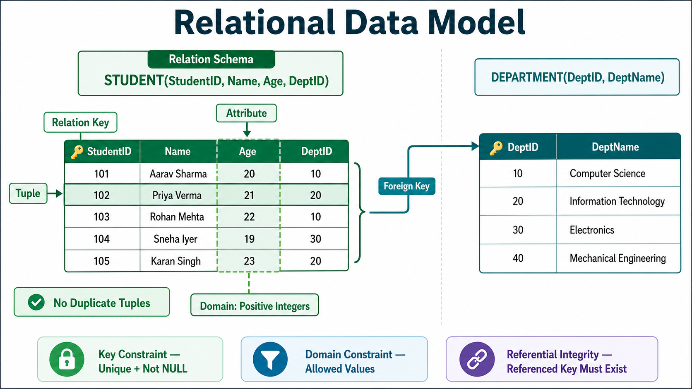

1. Relational Data Model
The Relational Data Model is the world’s most widely used model for storing and processing data. It is simple, efficient and provides the capabilities needed for reliable database operations.

2. Core Concepts
| Concept | Short meaning | Example |
|---|---|---|
| Table / Relation | Rows and columns representing related entities. | STUDENT table |
| Tuple | One row; a single record in the relation. | (101, Asha, 20) |
| Attribute | One named column describing a property. | Age |
| Relation Instance | Finite set of tuples currently stored. It contains no duplicate tuples. | All STUDENT rows now |
| Relation Schema | Relation name plus attribute names. | STUDENT(ID, Name, Age) |
| Relation Key | One or more attributes that uniquely identify a row. | StudentID |
| Attribute Domain | Predefined permitted set/range of values for an attribute. | Age: positive integers |
Memory line: Relation = table, tuple = row, attribute = column, domain = allowed values, instance = current rows, schema = table design.
3. Relational Integrity Constraints
A relation is valid only when required conditions hold. These conditions are called relational integrity constraints:
- Key constraints
- Domain constraints
- Referential integrity constraints
4. Key Constraints (Entity Constraints)
A relation must have at least one minimal subset of attributes that uniquely identifies every tuple. This minimal subset is a key.
- If several minimal unique subsets exist, they are candidate keys.
- One candidate key is normally selected as the primary key.
- No two tuples may have the same value for the chosen key attributes.
- A primary/key attribute used for entity identity cannot be NULL.
Why “minimal”? If StudentID alone identifies a row, {StudentID, Name} is unique but is not a candidate key because Name is unnecessary.
5. Domain Constraints
Every attribute must contain values from its declared real-world domain.
- Age must be a valid positive integer and cannot be below zero.
- A telephone number can contain only permitted digits such as 0–9.
- Data type, range, format and allowed values can all define a domain.
Easy test: Ask “Is this value valid for this column?” If not, it violates the domain constraint.
6. Referential Integrity Constraints
Referential integrity is based on foreign keys. A foreign key is an attribute (or set of attributes) in one relation that refers to a key in the same or another relation.
If a foreign-key value refers to a key, that referenced key must exist. This prevents orphan records.
Example: STUDENT.DeptID = 10 is valid only if DeptID 10 exists in DEPARTMENT. A NULL foreign key may be allowed when the relationship itself is optional.
7. IBPS SO Quick Revision
- Most widely used primary model—Relational Data Model.
- Rows are tuples; columns are attributes; tables are relations.
- Relation instance = current finite set of non-duplicate tuples.
- Relation schema = relation name and attributes.
- Key uniquely identifies a tuple.
- Candidate key = minimal unique attribute set.
- Domain = permitted values for an attribute.
- Key/entity constraint = unique and non-NULL identity.
- Domain constraint = values must fit the declared domain.
- Referential integrity = foreign-key reference must point to an existing key.
Most likely questions: Current table contents—relation instance. One row—tuple. Permitted value set—domain. Minimal unique subset—candidate key. Invalid parent reference—referential-integrity violation.